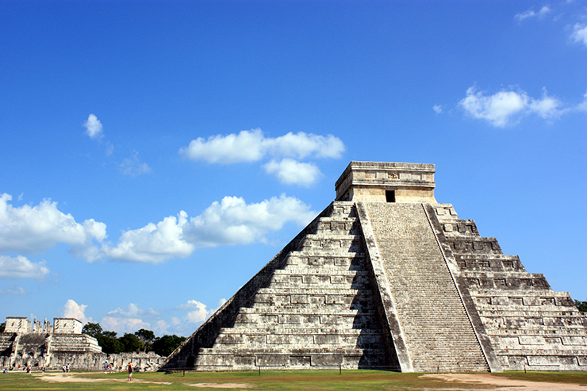
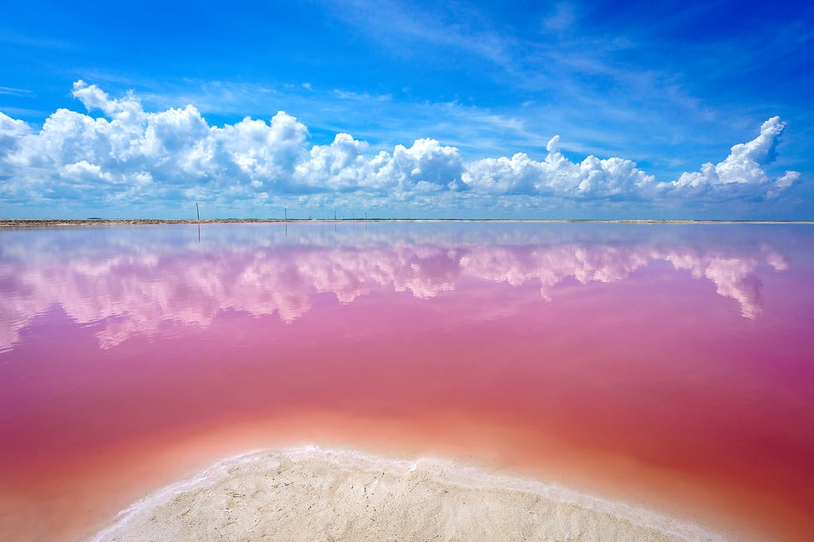
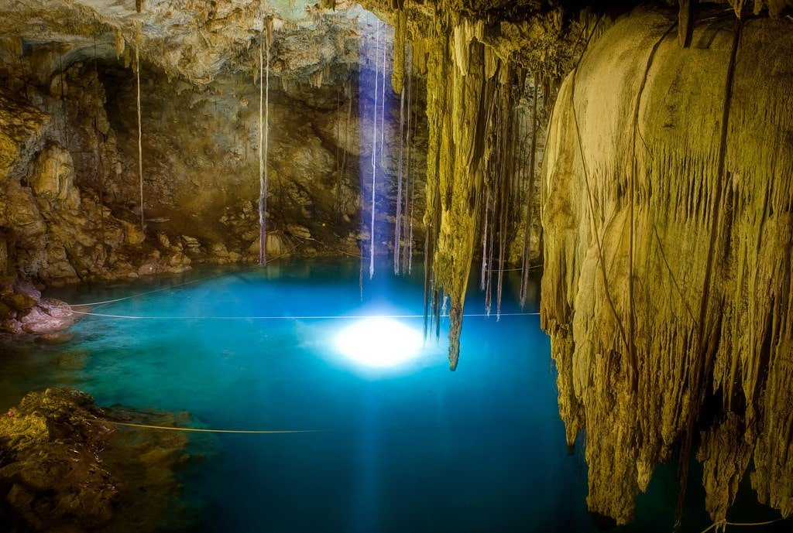
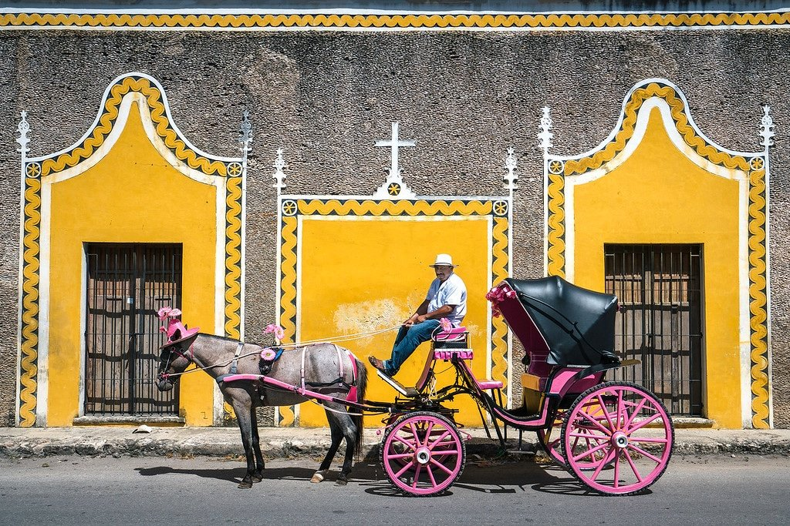
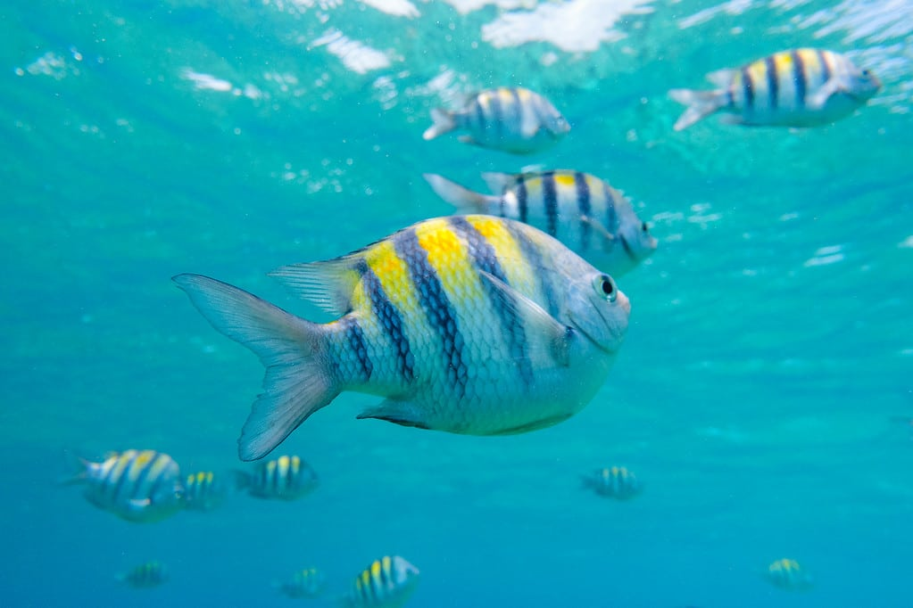
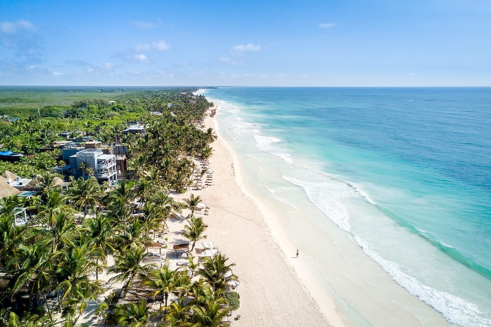

The Best of the Yucatán Peninsula
Mexico’s Yucatán Peninsula is a vast coastal region brimming with tropical beaches, spectacular wildlife, ancient Mayan ruins, small colonial towns, and plenty of outdoor adventures.
We hope that these adventure ideas show you that there is so more more to the Yucatán Peninsunsula than Cancún and inspire you to visit all it has to offer!
1. Explore Chichén Itzá
This UNESCO world heritage site is a centerpiece of the Mayan archaeological scene in Mexico, and gets around 1.4 million visitors a year — the region’s most popular ruins.
For over a thousand years Chichen Itza was one of the great cities of Central America – located here because of proximity to deep cenotes that gave access to fresh water. The modern site covers 5 square kilometers of exposed archaeology and impressive above-ground stone buildings, surrounded by dense forest.
You’ve probably seen pictures of the temple of Kukulcan – also known as El Castillo – because it’s breathtakingly photogenic. However, a century’s worth of excavations means the rest of Chichen Itza is equally cool.
2. Visit Las Coloradas
In a corner of the Ría Lagartos Biosphere Reserve, about 3 hours from Cancun, you’ll find a magical place where sea water turns bright pink on an epic scale.
It’s all down to salt production. The Las Coloradas pink lakes are used for industrial-scale sea-salt production. As the water evaporates, salinity causes an explosion in the growth of red algae, plankton and brine shrimp, tinting the water reddish-pink.
You can visit the lakes (and small town by the same name) if you have a car, and walk along their shores taking surreal photos of the pink water. It’s a really weird sight – and, curiously, the reason why flamingos are pink!
You may even spot some flamingos hanging out in the area too. Las Coloradas has become Instagram famous recently, and it’s no longer possible to get into the water, but you can still take photos.
3. Swim in the Cenotes of the Yucatán
What’s a cenote you ask? It’s an underground cave filled with fresh water. The Yucatán Peninsula has tons of them — sinkholes that open up into underground rivers with the clearest water you’ve ever seen.
Cenotes are the perfect way to cool off on a hot day, Mexico’s natural swimming holes created when the limestone bedrock caved in to reveal underground rivers below.
There are around 2000 different cenotes across the Yucatán. I’ve visited many of them, but some of my favorites are Dzitnip, Azul, Dos Ojos, and La Noria.
4. Izamal The Yellow Town
Welcome to another city obsessed with a primary color! Almost every major expanse of wall and building facade was painted a deep golden yellow for a special visit from Pope John Paul II in 1993, and they just never changed it.
Izamal is built on a series of hills that once housed Mayan pyramids (and much of the town still speaks the Mayan language). There is still one big pyramid overlooking the town that you can actually climb.
Like Merida, the town of Izamal is designed to be walkable (be sure to check out the enormous yellow-painted Franciscan monastery in the historic center) – but you can also get around by hiring horse-drawn carriages.
5. Scuba Diving Around Cozumel
A short ferry ride away from Playa del Carmen, the island of Cozumel runs at a completely different pace of life. This low limestone island is lined with scenic rocky beaches and jungle.
It’s also on the cruise ship route, as clearly seen from the amount of gift shops near the docks at San Miguel, home to most of the island’s population – but get away from town and the island’s rich emptiness reveals itself.
Unsurprisingly, Cozumel is a premier destination for scuba diving & snorkeling, catering to all skill levels.
6. Sunbathing & Yoga in Tulum
Tulum has the best beaches in the Yucatán Peninsula. The area originally served as a major port for the nearby Mayan jungle city of Cobá – but these days it’s full of hippies, backpackers, and celebrities looking to unwind.
Strictly speaking, there are three “Tulums.” There’s the pueblo (local town) where you can find affordable places to eat and sleep. The Tulum Archaeological Site features Mayan ruins perched on the edge of a sea cliff.
Lastly, Tulum’s playa is the stretch of coastline where you’ll find fancy resorts, vegan restaurants, health spas, and yoga studios. Rent a beach cruiser bicycle and check out all of Tulum’s great beaches!
Tulum has ample scuba diving, snorkeling, kite surfing, yoga, and cenote opportunities. You can also head a little out of town into the Sian Ka’an Biosphere Reserve for awesome mangrove & wildlife tours.